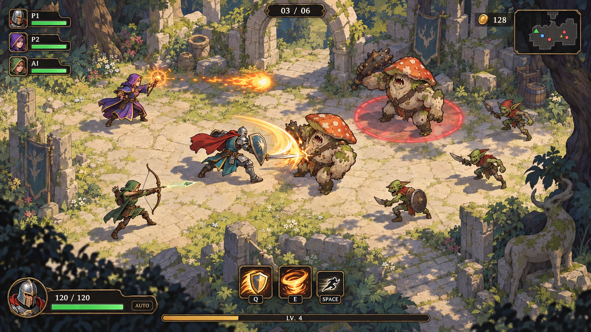
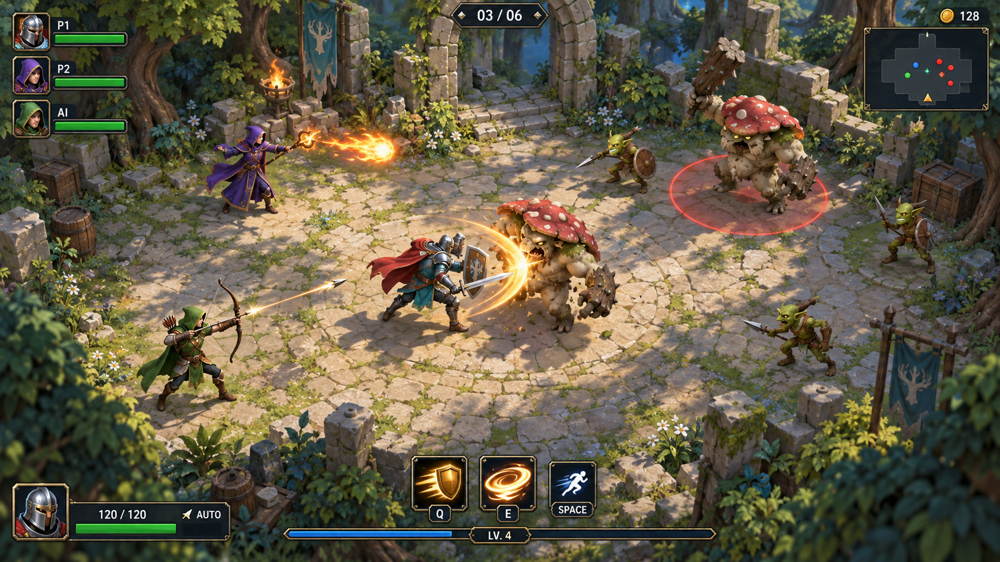
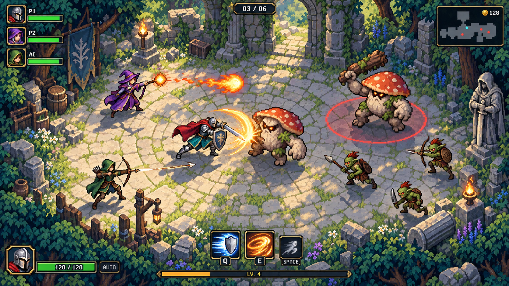
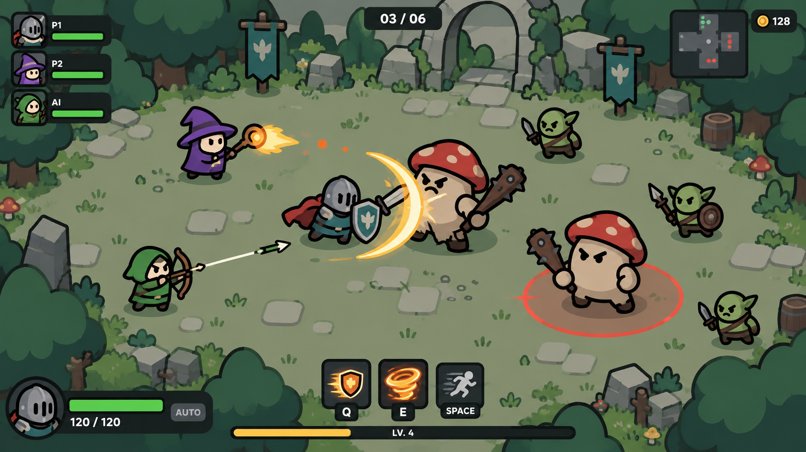
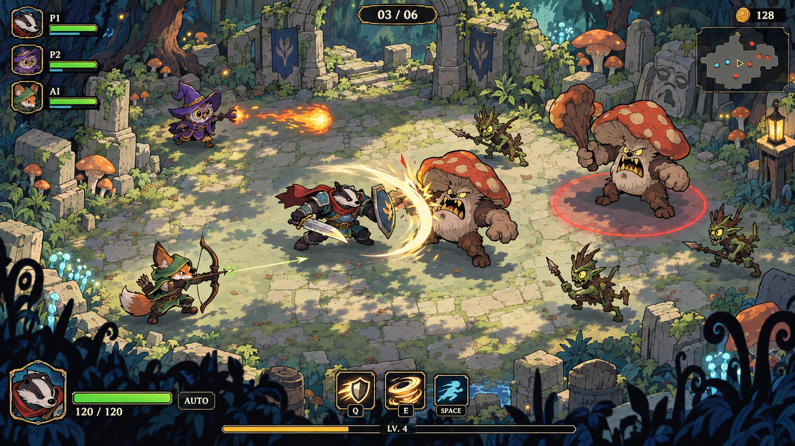
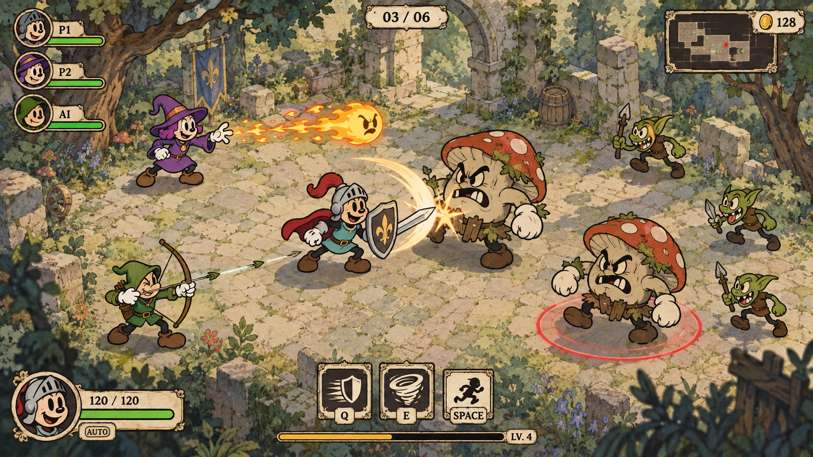
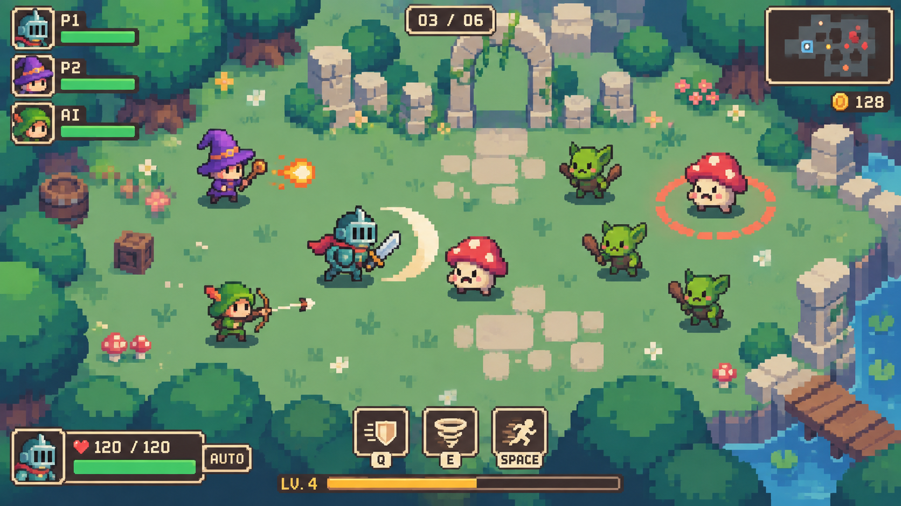

温暖、传统奇幻、手绘质感
A · 手绘卡通冒险
角色轮廓与环境分层；三职业仍用人类冒险者。
制作投入判断：中高：多方向角色细节与动作衔接需要打磨。
45° 斜俯视 · 战士 / 法师 / 弓手 · 两位玩家 + 一位 AI · 自动普攻 · 两个主动技能 + 闪避
以下均为内置 imagegen 生成的目标效果示意图，不是当前游戏实机截图，也不是可直接投入运行的精灵图集。角色比例、镜头高度和手部细节需在选型后统一。点击图片查看原图。
当前选择：D 方向。 查看双人同屏战斗与升级界面 →

角色轮廓与环境分层；三职业仍用人类冒险者。
制作投入判断：中高：多方向角色细节与动作衔接需要打磨。

最接近现有模型绑定与离线烘焙图集的生产路线。
制作投入判断：中：前期模型与绑定投入较集中，动作可复用。

像素网格统一，技能与角色保持清晰轮廓。
制作投入判断：中高：精细的多方向像素动作仍需逐帧修整。

粗黑边、圆润小人、大色块；武器和帽子承担职业识别。
制作投入判断：较低：结构简单，适合先把三职业和多人战斗做完整。

夸张兽人造型、粗描边、青绿森林；本图探索獾战士、猫头鹰法师、狐狸弓手。
制作投入判断：中高：大动作与表情需要专门设计。

橡皮管肢体、白手套、水彩背景、轻胶片质感；仍保留斜俯视清关。
制作投入判断：高：弹性变形与表演是核心，不能只给现有模型换贴图。

角色以约 16–24 像素高的观感设计，简化装备，用帽子、武器和主色区分职业。地面留白，怪物也采用圆润可爱造型。
制作投入判断：比 C 的精细像素细节量更小，但多方向动作仍需按像素网格制作。当前为画风示意，未验证严格的像素尺寸与网格。